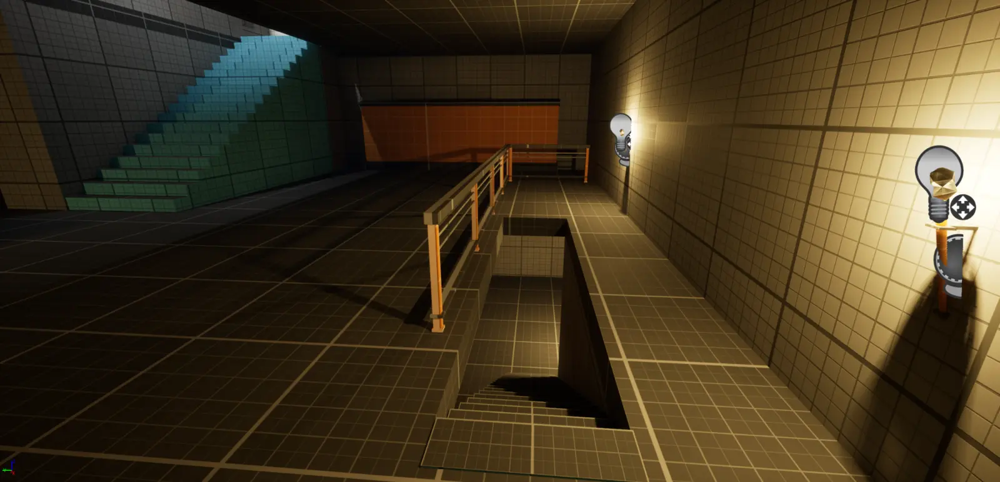
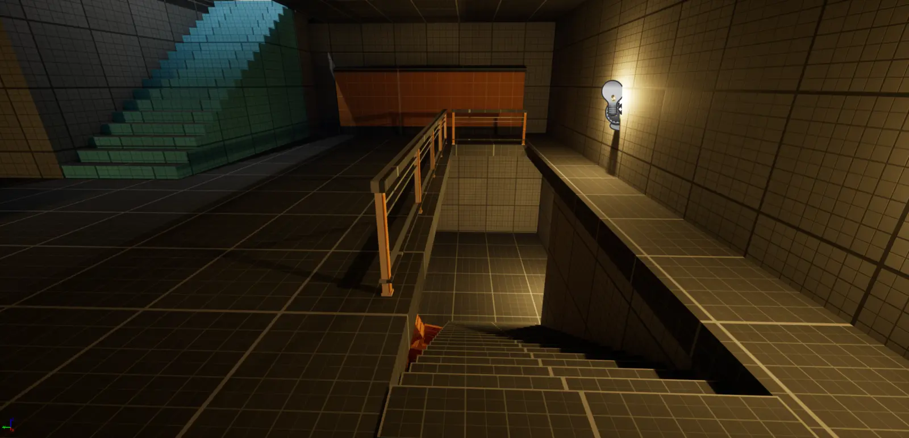

玩家能否读懂目标？
通过视线、明暗对比、构图框景与地标关系建立方向感，同时保留探索空间。
原创关卡 · Unreal Engine 5
一个第三人称ARPG白盒关卡，围绕空间再认知、风险收益路线、战斗节奏，以及开通捷径后的回归体验展开。
01 · 项目概览
关卡以清晰的主线路径为骨架，在其中穿插立体交叉、可选空间和阶段性回环。玩家再次经过熟悉区域时，会从新的高度、方向或路线重新理解之前见过的空间。
这一页面将随截图和迭代材料继续补充，包括更具体的战斗节拍、空间尺度与测试结论。
02 · 设计支柱
通过视线、明暗对比、构图框景与地标关系建立方向感，同时保留探索空间。
利用垂直路线，让同一空间从上方、下方与对面呈现新的意义。
将电梯和拉杆设计成真正压缩路程的功能性捷径，让玩家确认自己已经掌握关卡。
03 · 关卡流程

全关卡流程
整体动线连接室外路径、建筑内部、地下洞穴与教堂战斗区域。支路通过奖励、敌人和空间变化创造短暂偏离，随后重新汇入主要流程。

教堂战斗小箱庭
教堂不是一条单向走廊，而是一个紧凑的多层小箱庭。一楼战斗、高层路径、跳下点和捷径不断从新角度穿过同一空间。
点击流程图可以查看高清版本。
04 · 设计拆解
利用地标、高差、框景和高对比度的互动表面持续提示下一步方向，同时避免把探索空间压缩成单向走廊。
教堂用垂直路线改变玩家观察同一空间的角度，电梯则把这份空间认知转化为真正缩短回程的功能性捷径。
测试发现部分地形与狭窄通道会干扰第三人称相机。随后通过调整净空和通行尺度，让移动与战斗画面保持可读。



仅依赖窗口光时，关键通路容易淹没在黑暗中。加入有选择的补光后，在保留氛围和明暗层次的同时提升了路线辨识度。